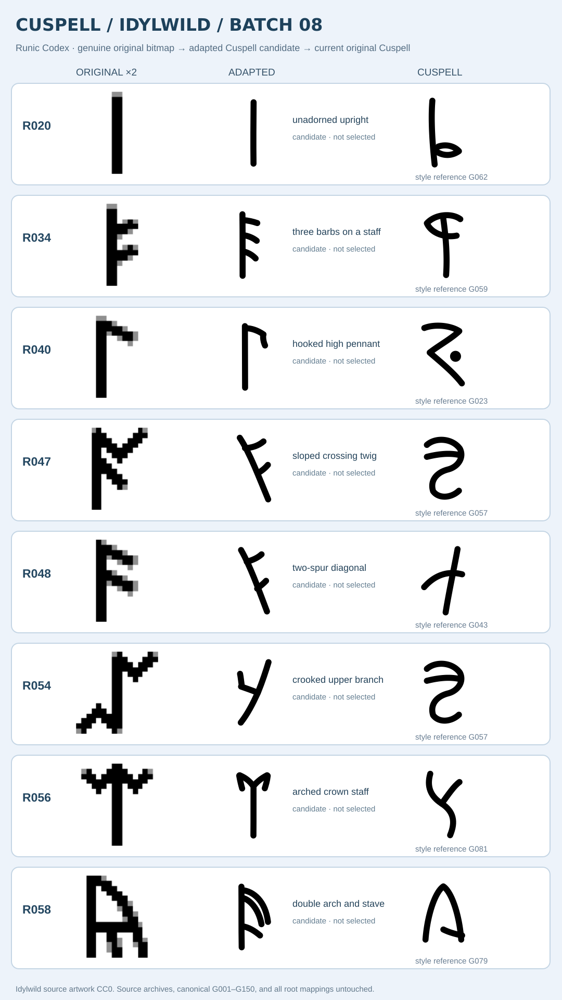
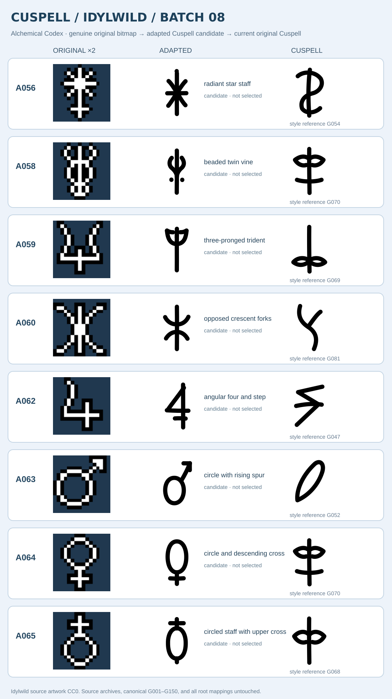

Original Idylwild pixels at left, Cuspell-style derivative vector in the middle, actual unchanged Cuspell reference at right. All candidates unselected, no semantics assigned. Source: Idylwild CC0.
Runic Codex

Alchemical Codex

Original archives unchanged; 150 canonical glyphs untouched.